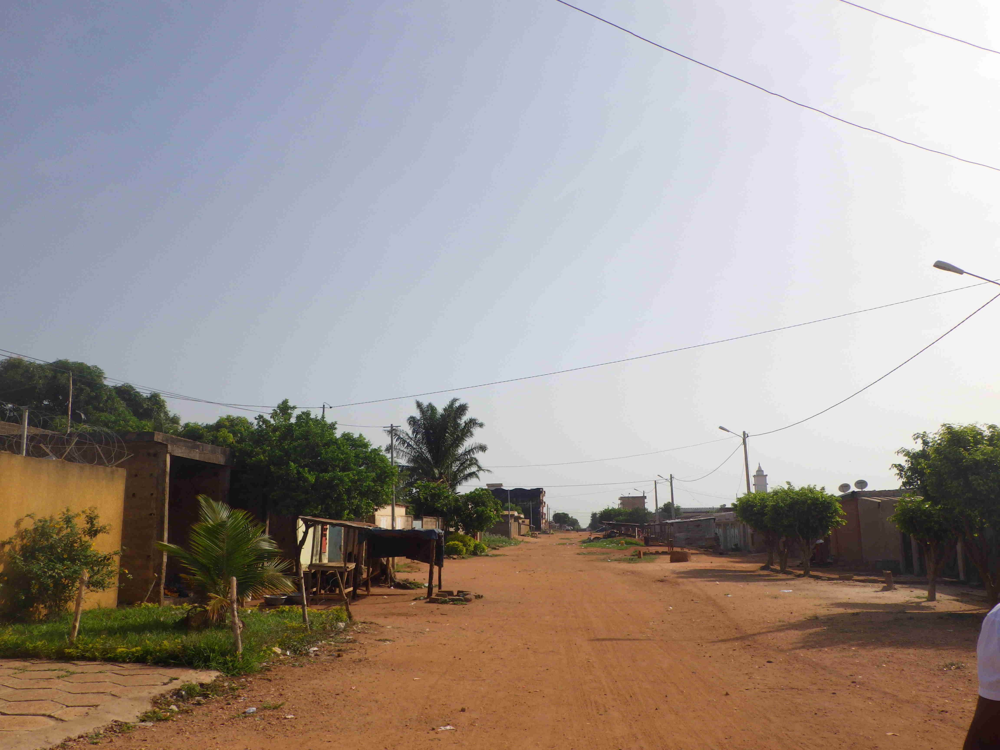
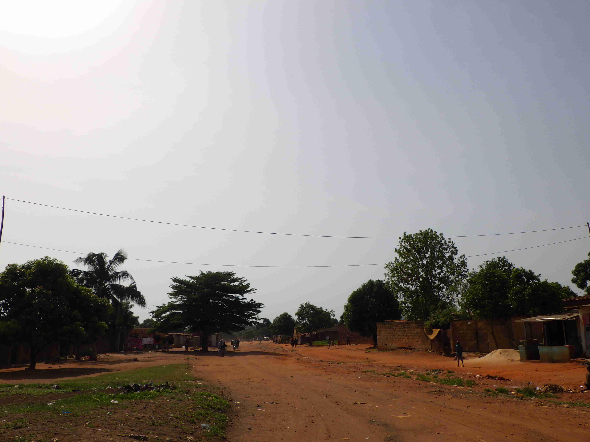
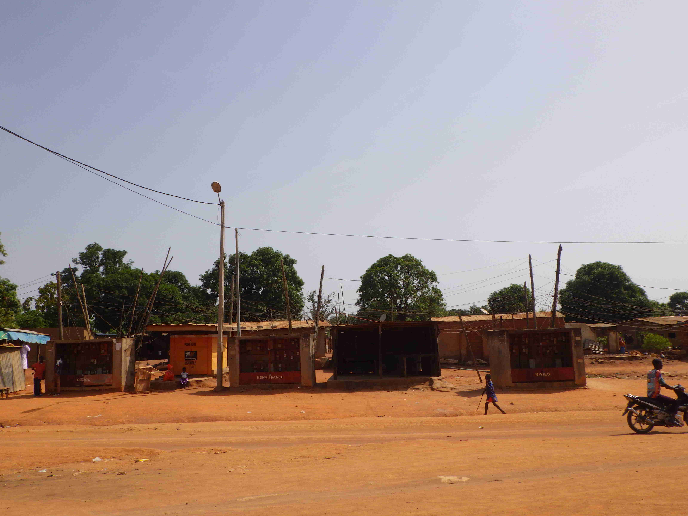
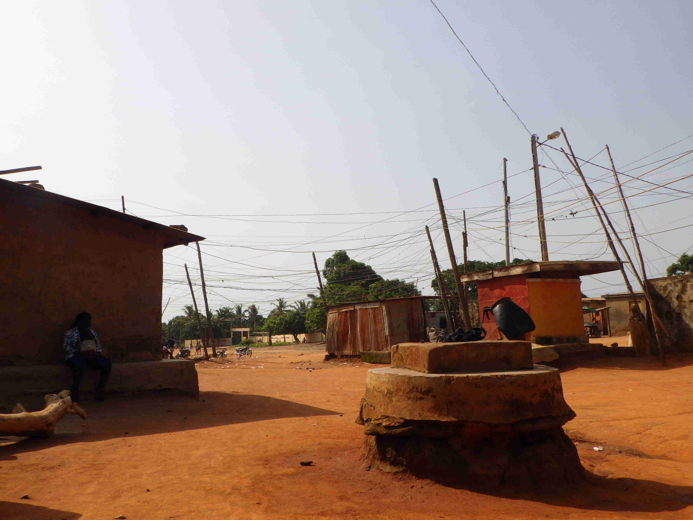

Zone Industrielle - Djézoukouamékro
tags: Urbain,Ville,Vulnérabilité urbaine
auteur: BROU Oscar Yves, SORO Doba, MAILLARD Thomas
latitude: 7.70400
longitude: -5.05500
zoom: 14
Quartier à l’ouest de Bouaké
| Nom de la localité : | Zone Industrielle - Djézoukouamékro |
| Population : | [population] |
| Nombre de sous localité : | [nombre de hameau ou sous quartier] |
| Aire : | 5 km² |
| taux de desserte | [ratio points d’eau/habitant] |
Socio-Anthropologie
[paragraphe sur la composition ethno-religieuse, le niveau de vie et la stratification sociale]
Configuration spatiale
Le quartier de Zone Industrielle, appelé également Djézoukouamékro, est un quartier majoritairement loti de standing bas, mais englobe des poches de zones non loties. Il est délimité au sud par la voie ferrée, à l’est par un bas-fond et au nord par des quartiers loties de standing plus élevés : Gonfreville et Soussonoubougou. Le quartier dispose des infrastructures de base : centres de santé et écoles. La voirie secondaire n’est pas bitumée et n’a pas de réseau de drainage. En conséquence, certaines zones souffre d’important problèmes d’érosion.
Le tissu urbain est hétérogène. Les parcelles de la zone loti forme un plan en damier et sont raccordées aux réseaux d’eau potable et d’électricité.
Dans les zones non loti le plan est moins régulier et les habitations ne sont pas systématiquement raccordées aux réseaux. Pour l’eau potable, ils s’alimentent principalement dans des puits situés dans les parcelles.
Paysage urbain
 
 
Diagnostic des points d’eau analysés
Forage
Aucun forage diagnostiqué
Puits
| ID du point d’eau | Latitude | Longitude | Responsable de la construction | Date de construction | Types de points d’eau | Prof | Diam | Hauteur | Existence de la superstructure | Margelle | Dalle anti-bourbier | Trottoir | Clôture | Canal d’évacuation des eaux | Couvercle adapté | Etat de la superstructure | Système d’exhaure | Disponibilité de l’eau | Mois de rupture | Entretien PE | Evolution de la ressource | Accès | Service collecte | Source de pollution à une distance inférieure à 30 m/100 m | Décrire la source de pollution | Absence ou la déficience de la clôture | Canal de drainage est inférieur en distance à 2 m, sale ou défectueux | Eau stagnante près de l’ouvrage | Dalle de l’ouvrage présente une largeur minimale inférieure à 1m/ouvrage | Dalle ou la margelle de l’ouvrage présente-t-elle des craquelures ou des fentes | Couvercle de l’ouvrage est-il inapproprié | Etanchéité) médiocre ou insuffisante ou inexistante sur les 3 m en-dessous du niveau du sol | Manque d’hygiène autour du point d’eau | Système d’exhaure est en mauvaise condition ou sale ou impropre | Score de Vulnérabilité | Couleur | Partie 4 Analyse de la qualité de l’eau/Paramètres organoleptiques/Décrire l’aspect | Gôut | Partie 4 Analyse de la qualité de l’eau/Paramètres organoleptiques/Décrire l’aspect | Odeur | Partie 4 Analyse de la qualité de l’eau/Paramètres organoleptiques/Décrire l’aspect | pH | Conductivité (µS/Cm) | Turbidité (UTN) | Température (°C) | Chlore libre (mg/L) | Chlore total (mg/L) | Ammoniac (mg/L) | Nitrate (mg/L) | Nitrite (mg/L) | Arsenic (mg/L) | Fluor (mg/L) | E Coli (UFC/100 mL) | Noter les commentaires |
|---|---|---|---|---|---|---|---|---|---|---|---|---|---|---|---|---|---|---|---|---|---|---|---|---|---|---|---|---|---|---|---|---|---|---|---|---|---|---|---|---|---|---|---|---|---|---|---|---|---|---|---|---|---|---|
| ZI-P1-Puits de la mosquée du terminus | 7,704005 | -5,060825 | Communautaire | 1980 | Puits traditionnels | 16,82 | 1 | 2,7 | Oui | Oui | Non | Non | Non | Non | Mauvais état | Puisette | 12 | Oui | Stable | Publique | Gratuit | 0 | 1 | 1 | 1 | 1 | 1 | 1 | 1 | 1 | 1 | 9 | Non | Non | Non | 6,14 | 103,47 | 15 | 30,1 | 0 | 0,1 | 0 | 22 | 0,066 | 0 | 0,2 | 37 | Les comportements en terme d’hygiène de l’eau sont très médiocre autour du point d’eau | ||||||
| ZI-P20-Puits de la mosquée | 7,7084466667 | -5,043535 | Communautaire | 2000 | Puits traditionnels | 13,9 | 1 | 4,1 | Oui | Non | Non | Non | Non | Non | Mauvais état | Puisette | 12 | Non | Stable | Publique | Gratuit | 1 | Les latrines sont à proximité | 0 | 1 | 0 | 1 | 0 | 0 | 0 | 0 | 0 | 3 | Non | Non | Non | 6,02 | 87,7 | 5 | 28 | 0 | 0,1 | 0 | 8,8 | 0,066 | 0 | 0,2 | 0 | Le point d’eau est très bien entretenu et relativement profond par rapport aux source de pollution | |||||
| ZI-P5-Puits mosquée jaune | 7,6991716667 | -5,06415 | Communautaire | 2016 | Puits traditionnels | 14,1 | 0,8 | 6,2 | Oui | Oui | Non | Non | Non | Non | Mauvais état | Puisette | 12 | Non | Stable | Publique | Gratuit | 0 | 1 | 1 | 1 | 1 | 1 | 1 | 1 | 1 | 1 | 9 | Non | Non | Non | 6,33 | 226,47 | 5 | 27,8 | 0 | 0 | 0 | 13,2 | 0,066 | 0 | 0 | 0 | Le puits est mal entretenu et comportement à risque | ||||||
| ZI-P18-Puits franco arabe avant le marché | 7,7060716667 | -5,0468633333 | ONG | 2016 | Puits traditionnels | 16,8 | 1 | 3,6 | Oui | Oui | Oui | Non | Non | Non | Bon état | Poulie | 12 | Oui | Stable | Publique | Gratuit | 0 | 1 | 1 | 0 | 1 | 0 | 1 | 1 | 0 | 0 | 5 | Non | Non | Non | 6,55 | 132 | 5 | 30,5 | 0 | 0,1 | 0 | 8,8 | 0,066 | 0 | 0 | 3 | Pas de risque de pollution immédiat excepté les comportements des usagers | ||||||
| ZI-P12-Puits famille Sylla | 7,7026933333 | -5,0504933333 | ONG | 2016 | Puits traditionnels | 13,8 | 1 | 0,7 | Oui | Oui | Non | Non | Non | Oui | Bon état | Poulie | 9 | Février | Oui | Augmentation | Publique | Gratuit | 1 | Latrine à fosse directe à proximité du puits | 1 | 1 | 1 | 1 | 0 | 0 | 1 | 1 | 1 | 8 | Oui | Rouge | Oui | Salée | Non | 5,98 | 705 | 25 | 29,8 | 0 | 0,5 | 1 | 17,6 | 0,495 | 0 | 0,6 | 17 | L’on observe des latrines à fosses directes très sales à proximité du puits et des moisissures sur la superstructure du puits. L’ammoniac est en grande quantité dans l’eau avec une valeur supérieure à 1mg/L | ||
| ZI-P31-Point d’eau de la famille Loboue | 7,712625 | -5,0635416667 | Privé | 2014 | Puits maçonnés | 5,2 | 1 | 2 | Oui | Non | Non | Non | Non | Non | Bon état | Puisette | 12 | Oui | Stable | Publique | Gratuit | 0 | 1 | 1 | 0 | 1 | 1 | 1 | 1 | 0 | 0 | 6 | Non | Oui | L’eau est un peu salée | Non | 6,27 | 283 | 4 | 30,5 | 0,3 | 0,5 | 0,1 | 35,2 | 0,066 | 0 | 0,8 | 0 | Le point d’eau est bien entretenu, 2 colorations par mois. Beaucoup exposé aux eaux de ruissellement | |||||
| ZI-P22-Puis de la famille Diarrassouba | 7,7082933333 | -5,04835 | Privé | 2010 | Puits maçonnés | 25 | 1 | 13 | Oui | Non | Oui | Non | Non | Non | Bon état | Puisette | 12 | Oui | Stable | Publique | Gratuit | 1 | Latrine à moins de 30 m | 1 | 1 | 1 | 1 | 0 | 1 | 1 | 0 | 1 | 8 | 6,16 | 57,2 | 40 | 26,7 | 0 | 0,3 | 0 | 13,2 | 0,066 | 0 | 0,2 | 2 | Puits familialassez profond pas risque de contamination car il est très profond | ||||||||
| ZI-P19-Maison limite | 7,7064983333 | -5,0443633333 | Privé | 2010 | Puits maçonnés | 13 | 1 | 2,2 | Oui | Oui | Oui | Bon état | Puisette | 11 | Février | Oui | Diminution | Publique | Gratuit | 1 | Toilletes | 1 | 1 | 1 | 1 | 0 | 0 | 1 | 1 | 1 | 8 | Non | Non | Non | 5,85 | 179,4 | 5 | 29,3 | 0 | 0,2 | 0,3 | 13,2 | 0,066 | 0 | 0,8 | 11 | Pratique de collecte de l’eau médiocre puisette à même le sol | |||||||
| ZI-P9-Puits famille Brou | 7,70571 | -5,0569833333 | Privé | 2000 | Puits maçonnés | 9 | 1 | 3,4 | Oui | Non | Non | Non | Oui | Mauvais état | Puisette | 12 | Oui | Augmentation | Publique | Gratuit | 1 | Latrine à fosse directe et une enclos pour élevage de poulet | 1 | 1 | 0 | 1 | 1 | 0 | 1 | 1 | 0 | 7 | Non | Oui | L’eau est un peu salée | Non | 6,34 | 5 | 31,2 | 0 | 0,1 | 1 | 4,4 | 0,33 | 0 | 0,6 | 0 | La superstructure du puits est en dégradation. Et l’on observe un enclos d’élevage de poulet à proximité du puits ainsi que des latrines à fosses directes | ||||||
| ZI-P7-Puits famille Bomisso | 7,7035316667 | -5,06669 | Privé | 2016 | Puits maçonnés | 10 | 1 | 7 | Oui | Oui | Non | Non | Non | Non | Mauvais état | Puisette | 12 | Oui | Stable | Publique | Gratuit | 1 | La br1llage et un canal d’évacuation d’eau usées à proximité du puits | 1 | 1 | 1 | 1 | 1 | 1 | 1 | 1 | 1 | 10 | Non | Non | Non | 5,04 | 5 | 29,9 | 0 | 0,1 | 0 | 17,6 | 0,066 | 0 | 0,2 | 5 | La superstructure du puits est dégradée. Il y’a à proximité du point d’eau une broussaille et un canal d’évacuation d’eau usées. Le point d’eau est parsemé de flaques d’eau | ||||||
| ZI-P3-Puits Mr Kone | 7,6987416667 | -5,0586033333 | Privé | 1995 | Puits traditionnels | 12,8 | 1 | 3,6 | Oui | Non | Non | Non | Non | Non | Mauvais état | Puisette | 12 | Non | Stable | Publique | Gratuit | 1 | Proximité des maraîchers et présence de matière fécale en amont | 1 | 1 | 1 | 1 | 1 | 1 | 1 | 1 | 1 | 10 | Non | Non | Non | 5,65 | 95,5 | 10 | 28,7 | 0 | 0 | 0,3 | 22 | 0,066 | 0 | 0,8 | 4 | Risque de contamination élevé | |||||
| ZI-P30-Puits du chef de village | 7,6978633333 | -5,06612 | Privé | 2018 | Puits traditionnels | 13,3 | 1 | 8,4 | Oui | Non | Non | Non | Non | Non | Bon état | Puisette | 12 | Oui | Augmentation | Publique | Gratuit | 1 | Les latrines sont à moins de 30 m | 1 | 1 | 1 | 1 | 0 | 0 | 1 | 0 | 0 | 6 | Non | Non | Non | 5,78 | 68,7 | 5 | 32 | 0 | 0,1 | 0 | 35,2 | 0,066 | 0 | 0,8 | 0 | Le puits est récent et bien entretenu. La margelle est basse donc risque de pollution encas de forte eaux de ruissellement | |||||
| ZI-P27-Puits de Traore Bakary | 7,7081833333 | -5,0495466667 | Privé | Puits traditionnels | 18,5 | 1 | 7,6 | Oui | Non | Non | Non | Non | Non | Mauvais état | Puisette | 12 | Non | Stable | Publique | Gratuit | 1 | Latrine | 0 | 1 | 0 | 1 | 1 | 1 | 1 | 0 | 1 | 7 | Non | Oui | Un peu sucré | Non | 6,03 | 67,08 | 5 | 26,9 | 0 | 0,3 | 1 | 26,4 | 1,32 | 0 | 0,8 | 3 | Concentration d’ammoniac élevé | |||||
| ZI-P26-Puits de la famille Sogodogo | 7,709765 | -5,0478333333 | Privé | 2008 | Puits traditionnels | 9,85 | 1 | 0,8 | Oui | Non | Non | Non | Non | Non | Bon état | Puisette | 8 | Février | Non | Diminution | Publique | Gratuit | 0 | 1 | 1 | 0 | 1 | 0 | 1 | 1 | 0 | 1 | 6 | Non | Non | Non | 4,91 | 76 | 33,2 | 0 | 0,1 | 0 | 17,6 | 0,066 | 0 | 0,6 | 0 | Puits récent moins de 4 mois | ||||||
| ZI-P24-Puits de cour à côté du nouveau marché | 7,6994183333 | -5,0709066667 | Privé | 2008 | Puits traditionnels | 12,8 | 1,2 | 8 | Oui | Oui | Oui | Non | Non | Non | Bon état | Puisette | 12 | Non | Stable | Publique | Gratuit | 1 | Les latrines à moins de 30 m | 1 | 1 | 1 | 0 | 0 | 0 | 1 | 1 | 1 | 7 | Non | Oui | Un peu aigre | Non | 5,89 | 89 | 5 | 28,9 | 0 | 0,1 | 0,1 | 17,6 | 0,066 | 0 | 0,2 | 33 | Le point d’eau est sale et les comportements en terme d’hygiène de l’eau est médiocre | ||||
| ZI-P23-Puits vers les railles | 7,700335 | -5,068505 | Privé | 2012 | Puits traditionnels | 11,5 | 1 | 5 | Oui | Non | Non | Non | Non | Non | Bon état | Puisette | 9 | Mars | Oui | Diminution | Privé | Gratuit | 1 | Les latrines sont à moins de 30 m | 1 | 1 | 0 | 0 | 0 | 0 | 1 | 0 | 1 | 5 | Non | Non | Non | 6,04 | 86 | 5 | 30,06 | 0 | 0,3 | 0 | 26,4 | 0,066 | 0 | 0,8 | 7 | Puits propre mais latrines à proximité | ||||
| ZI-P29-Puits de madame kouakou akissi Louise | 7,6981083333 | -5,0680783333 | Privé | 1995 | Puits traditionnels | 8,5 | 1 | 7 | Oui | Non | Non | Non | Non | Non | Mauvais état | Puisette | 9 | Février | Oui | Stable | Publique | Gratuit | 1 | Les latrines à moins de 30m | 1 | 1 | 1 | 1 | 1 | 1 | 1 | 1 | 1 | 10 | Oui | Grisâtre | Non | Non | 5 | 56 | 5 | 31,3 | 0 | 0,1 | 0 | 35,2 | 0,066 | 0 | 0,2 | 7 | Le puits est mal entretenu, le niveau de la nappe est de 1.5 en dessous de la surface donc tres vulnérable à une pollution d’orgine fécale | |||
| ZI-P28-Puits de M yao n’guessan | 7,6976366667 | -5,06254 | Privé | 2017 | Puits traditionnels | 7 | 1 | 3 | Oui | Non | Non | Non | Non | Non | Mauvais état | Puisette | 12 | Oui | Stable | Publique | Gratuit | 0 | 1 | 1 | 1 | 1 | 1 | 1 | 1 | 1 | 1 | 9 | Non | Oui | Un peu sucré | Non | 5,74 | 5 | 30,4 | 0 | 0,1 | 0 | 8,8 | 0,066 | 0 | 0,8 | 23 | Point d’eau en bordure du bas-fonds. Structure dégradé | ||||||
| ZI-P21-Kouadio akissi Yvonne | 7,7034183333 | -5,0587666667 | Privé | 2008 | Puits traditionnels | 13,9 | 1 | 2,9 | Oui | Non | Non | Non | Non | Non | Bon état | Puisette | 9 | Février | Non | Diminution | Publique | Gratuit | 1 | Latrines | 1 | 1 | 0 | 1 | 0 | 0 | 1 | 0 | 0 | 5 | Non | Non | Non | 5,83 | 95,4 | 5 | 32,5 | 0 | 0,1 | 0,2 | 4,4 | 0,066 | 0 | 0 | 9 | Le puits est bien entretenu | ||||
| ZI-P17-Puits de la famille Konate | 7,7011966667 | -5,0433633333 | Privé | 1998 | Puits traditionnels | 16 | 1 | 4,5 | Oui | Oui | Non | Non | Non | Non | Mauvais état | Puisette | 9 | Janvier | Oui | Diminution | Publique | Gratuit | 0 | 1 | 1 | 1 | 1 | 1 | 1 | 1 | 1 | 1 | 9 | Oui | Un peu trouble | Non | Non | 5,33 | 95,8 | 10 | 28,9 | 0 | 0,1 | 0 | 8,8 | 0,066 | 0 | 0,8 | 5 | Presence parc à bétail | ||||
| ZI-P16-Puits de la famille Karaboue Daouda | 7,702605 | -5,0449 | Privé | 1988 | Puits traditionnels | 14 | 1 | 5 | Oui | Non | Non | Non | Non | Non | Mauvais état | Puisette | 9 | Février | Non | Diminution | Publique | Gratuit | 1 | Élevage et Latrine | 1 | 1 | 1 | 1 | 1 | 1 | 1 | 1 | 1 | 10 | Non | Oui | Sucré | Non | 5,3 | 33,6 | 5 | 28,1 | 0,3 | 0,4 | 0 | 17,6 | 0,066 | 0 | 0,2 | 17 | Point d’eau est vulnérable à la pollution et super structure dégradé | |||
| ZI-P15-Puits famille Sangaré | 7,7015483333 | -5,045495 | Privé | 1990 | Puits traditionnels | 11,5 | 1 | 2,8 | Oui | Non | Non | Non | Non | Non | Mauvais état | Puisette | 12 | Oui | Diminution | Publique | Gratuit | 1 | Toilettes à proximité du puits | 1 | 1 | 1 | 1 | 1 | 1 | 1 | 1 | 1 | 10 | Non | Non | Non | 5,4 | 383 | 5 | 28,9 | 0 | 0,1 | 1 | 44 | 0,165 | 0 | 0,8 | 31 | Le puits présente une superstructure et un environnement en mauvais état. L’on observe à proximité du puits des latrines à fosses simples aussi en mauvais état et un dépotoir. Le taux d’ammoniac est élevé supérieur à 1mg/L | |||||
| ZI-P14-Puits famille Kone | 7,7000283333 | -5,04876 | Privé | 2018 | Puits traditionnels | 10,8 | 1 | 1,9 | Oui | Oui | Non | Non | Non | Oui | Bon état | Poulie | 12 | Oui | Augmentation | Publique | Gratuit | 1 | Étang d’eau sale à proximité du puits, comportement à risque des utilisateurs du point d’eau | 1 | 1 | 1 | 1 | 0 | 0 | 1 | 1 | 1 | 8 | Non | Non | Non | 5,63 | 290 | 10 | 28,6 | 0 | 0,1 | 1 | 44 | 0 | 0 | 0 | 0 | Le point d’eau est un puits récemment construit mais déjà en mauvais état. L’environnement immédiat du puits est sale avec une étang d’eau sale à proximité. L’ammoniac est en grande quantité dans l’eau. Sa valeur est supérieur à 1 | |||||
| ZI-P13-Puits famille Sidibé | 7,701575 | -5,0501633333 | Privé | 2014 | Puits traditionnels | 13,5 | 1 | 1,8 | Oui | Oui | Non | Non | Non | Non | Mauvais état | Puisette | 9 | Février | Oui | Augmentation | Publique | Gratuit | 1 | La broussailles à proximité du puits | 1 | 1 | 0 | 1 | 1 | 1 | 1 | 1 | 1 | 9 | Non | Non | Non | 6,21 | 298 | 5 | 26,9 | 0 | 0,3 | 0 | 4,4 | 0,066 | 0 | 0,8 | 11 | La superstructure du puits est en mauvais état, en plus de la broussaille à proximité du point d’eau. L’environnement du puits est mal entretenu d’où la présence de moisissures | ||||
| ZI-P11-Puits famille Kouadio | 7,70558 | -5,0507 | Privé | 2000 | Puits traditionnels | 12,5 | 1 | 3,35 | Oui | Non | Non | Non | Non | Mauvais état | Puisette | 10 | Février | Oui | Diminution | Publique | Gratuit | 1 | Latrine à fosse directe à proximité du puits | 1 | 1 | 1 | 1 | 1 | 1 | 1 | 1 | 0 | 9 | Non | Non | Non | 5,8 | 154 | 5 | 29,9 | 0 | 0,3 | 0,4 | 4,4 | 0,165 | 0 | 0,6 | 2 | Le puits est sale avec une proximité avec des latrines à fosse directe. La superstructure est en mauvais état présentant des craquelures à certains niveaux | |||||
| ZI-P10-Puits famille N’guessan | 7,7063033333 | -5,0519533333 | Privé | 1978 | Puits traditionnels | 9,9 | 1 | 2,3 | Oui | Oui | Non | Non | Non | Oui | Mauvais état | Puisette | 8 | Février | Oui | Augmentation | Privé | Gratuit | 0 | 1 | 1 | 1 | 1 | 1 | 0 | 1 | 1 | 1 | 8 | Non | Non | Non | 5,37 | 109 | 5 | 30 | 0 | 0,3 | 0 | 4,4 | 0,066 | 0 | 0,6 | 0 | La superstructure du point d’eau est dégrader. Avec les herbes et la moisissure autour du point d’eau. | |||||
| ZI-P8-Puits famille Diarrassouba | 7,7075566667 | -5,0577166667 | Privé | 2018 | Puits traditionnels | 13 | 1 | 4,5 | Oui | Oui | Non | Non | Non | Non | Mauvais état | Puisette | 12 | Oui | Augmentation | Publique | Gratuit | 0 | 1 | 1 | 0 | 1 | 0 | 1 | 1 | 0 | 1 | 6 | Non | Non | Non | 6,25 | 68,3 | 5 | 30,6 | 0 | 0,1 | 0 | 66 | 0,066 | 0 | 0 | 0 | Le point d’eau est isolé au milieu de la cour. La margelle et la dalle sont en bon état mais le couvercle est inapproprié | ||||||
| ZI-P6-Puits de la famille Mania Doumouya | 7,70548 | -5,0536216667 | Privé | 1998 | Puits traditionnels | 14 | 1 | 3,5 | Oui | Non | Non | Non | Non | Non | Mauvais état | Puisette | 8 | Janvier | Oui | Diminution | Publique | Gratuit | 1 | Les latrines à moins de 30 m | 1 | 1 | 0 | 1 | 1 | 1 | 1 | 0 | 1 | 8 | Non | Oui | Un peu sucré | Non | 6,1 | 78,6 | 5 | 29,6 | 0 | 0,1 | 0,3 | 17,6 | 0,066 | 0 | 0 | 37 | Margelle est dégradée et érosion de surface | |||
| ZI-P2-Puits en face de la cour de l’ancien chef | 7,7028816667 | -5,05882 | Privé | 2008 | Puits traditionnels | 13,83 | 1 | 2,4 | Oui | Non | Non | Non | Non | Non | Mauvais état | Puisette | 9 | Février | Non | Diminution | Publique | Gratuit | 0 | 1 | 1 | 1 | 1 | 1 | 1 | 1 | 0 | 0 | 7 | Non | Non | Non | 5,82 | 137,7 | 5 | 29,7 | 0 | 0 | 0 | 13,2 | 0,066 | 0 | 0,2 | 14 | Pas de sources de contamination immédiate |
Eau de surface
| ID du point d’eau | Latitude | Longitude | Responsable de la construction | Date de construction | Types de points d’eau | Prof | Diam | Hauteur | Existence de la superstructure | Margelle | Dalle anti-bourbier | Trottoir | Clôture | Canal d’évacuation des eaux | Couvercle adapté | Etat de la superstructure | Système d’exhaure | Disponibilité de l’eau | Mois de rupture | Entretien PE | Evolution de la ressource | Accès | Service collecte | Source de pollution à une distance inférieure à 30 m/100 m | Décrire la source de pollution | Absence ou la déficience de la clôture | Canal de drainage est inférieur en distance à 2 m, sale ou défectueux | Eau stagnante près de l’ouvrage | Dalle de l’ouvrage présente une largeur minimale inférieure à 1m/ouvrage | Dalle ou la margelle de l’ouvrage présente-t-elle des craquelures ou des fentes | Couvercle de l’ouvrage est-il inapproprié | Etanchéité) médiocre ou insuffisante ou inexistante sur les 3 m en-dessous du niveau du sol | Manque d’hygiène autour du point d’eau | Système d’exhaure est en mauvaise condition ou sale ou impropre | Score de Vulnérabilité | Couleur | Partie 4 Analyse de la qualité de l’eau/Paramètres organoleptiques/Décrire l’aspect | Gôut | Partie 4 Analyse de la qualité de l’eau/Paramètres organoleptiques/Décrire l’aspect | Odeur | Partie 4 Analyse de la qualité de l’eau/Paramètres organoleptiques/Décrire l’aspect | pH | Conductivité (µS/Cm) | Turbidité (UTN) | Température (°C) | Chlore libre (mg/L) | Chlore total (mg/L) | Ammoniac (mg/L) | Nitrate (mg/L) | Nitrite (mg/L) | Arsenic (mg/L) | Fluor (mg/L) | E Coli (UFC/100 mL) | Noter les commentaires |
|---|---|---|---|---|---|---|---|---|---|---|---|---|---|---|---|---|---|---|---|---|---|---|---|---|---|---|---|---|---|---|---|---|---|---|---|---|---|---|---|---|---|---|---|---|---|---|---|---|---|---|---|---|---|---|
| ZI-P4-Mare près des rails | 7,6972366667 | -5,060495 | Source d’eau naturelle | Marigot | 12 | Non | Stable | Publique | Gratuit | 1 | Culture maraîchers et eau de ruissellement | 1 | 1 | 1 | 1 | 1 | 1 | 1 | 1 | 1 | 10 | Oui | Trouble | Oui | Sucré | Non | 6,23 | 34 | 7 | 29,3 | 0 | 0 | 0,5 | 35,2 | 0,066 | 0 | 0,4 | 146 | Point d’eau soumis à divers source de pollution | |||||||||||||||
| ZI-P25-Barrage de la Zone | 7,7133816667 | -5,0626983333 | Source d’eau naturelle | Réservoir de barrage | 12 | Non | Diminution | Publique | Gratuit | 1 | Maraîchage, DAL | 1 | 1 | 1 | 1 | 1 | 1 | 1 | 1 | 1 | 10 | Oui | Noirâtre | Oui | Terre | Oui | Sens mauvais | 7,05 | 58,3 | 8 | 28,7 | 0,4 | 0,6 | 0 | 8,8 | 0,066 | 0 | 0,8 | 186 | Le barrage draine toutes les eaux du quartier avec de forts risques de cotamination fécale |
La population du quartier s’approvisionne majoritairement au réseau de la SODECI, dans des puits communautaires (puits de mosquées ou d’églises) et dans des puits privés situés dans la cour de l’habitation ou à l’extérieur de la parcelle. Les coupures récurrentes dans l’approvisionnement de la SODECI les incitent à privilégier les puits. Les plans d’eau de surface (mare et réservoir de barrage) sont utilisés principalement en période de crise (coupure longue du réseau et tarissement des puits). Lors de la crise de 2018, le quartier à été approvisionné en eau par des camions citernes de l’Office National de l’Eau Potable (ONEP).
Certaines personnes signalent qu’elles n’utilisent l’eau des puits que pour les tâches ménagères et privilégient l’eau de la SODECI pour la boisson.
Mode de gestion
Les points d’eau communautaires (mosquées et églises) sont gérés par un comité local. Les puits privés relèvent de la responsabilité de leur propriétaire.
Les peronnes ressources en matière d’eau potable:
- personne 1
- personne 2
Gestion des excrétats
[paragraphes décrivant les usages en matière de défécation, l’équipement en latrine et la gestion des excrétats humains mais aussi de l’élevage]
Desiderata des habitants
| Type d’entretien | Date |
|---|---|
| Entretien individuel Imam Djezou | 15-21 Octobre 2018 |
| Entretien individuel président jeunesse Djezou | 15-21 Octobre 2018 |
| Entretien individuel présidente des femmes Djezou | 15-21 Octobre 2018 |
| Entretien individuel Pasteur BOKE AD Djezou | 22-28 Octobre 2018 |
| Entretien individuel KOUASSI CMA Djezou | 22-28 Octobre 2018 |
| Focus femmes Djezou | 15-21 Octobre 2018 |
| Focus group hommes Djezou rail | 22-28 Octobre 2018 |
| Focus group chefferies Djezou | 15-21 Octobre 2018 |
| Focus group hommes Djezou 2 | 22-28 Octobre 2018 |
| Focus group femmes Djezou Rail | 22-28 Octobre 2018 |
| Entretien individuel président jeunesse zone extention | 15-21 Octobre 2018 |
| Focus group femmes zone extention | 15-21 Octobre 2018 |
| Focus group Jeunes zone extention | 15-21 Octobre 2018 |
| Entretien individuel président jeunesse Assoumankro | 15-21 Octobre 2018 |
| Entretien individuel président jeunesse Kouakro | 15-21 Octobre 2018 |
| Focus group femmes Kouakro | 22-28 Octobre 2018 |
| Focus group jeunes Kouakro | 22-28 Octobre 2018 |
| Entretien individuel présidente femmes zone extention | 15-21 Octobre 2018 |
| Entretien individuel Imam Zone Extention | 22-28 Octobre 2018 |
| Dr KONAN CRD Université Alassane OUATTARA | 22-28 Octobre 2018 |
Les entretiens montrent que la population utilise l’eau des puits en réaction à l’irrégularité des approvisionnement de la SODECI. Une distinction importante entre les voeux des hommes et ceux des femmes apparaissent dans les entretiens que nous avons menés. Les hommes souhaiteraient voir s’améliorer la qualité sanitaire de l’eau des puits pour pouvoir continuer de la consommer cette eau gratuite comme eau de boisson. Les femmes préfèreraient que les approvisionnements de la SODECI soient plus réguliers. Cela leur éviterait des corvées d’eau fatiguantes qui leur prennent beaucoup de temps et leur occasionnent des troubles musculo-squeletiques.
Tensions ressenties lors des entretiens
Tensions générales
[]
Tensions autour de l’eau
[]
Tensions avec les localités voisines
[]